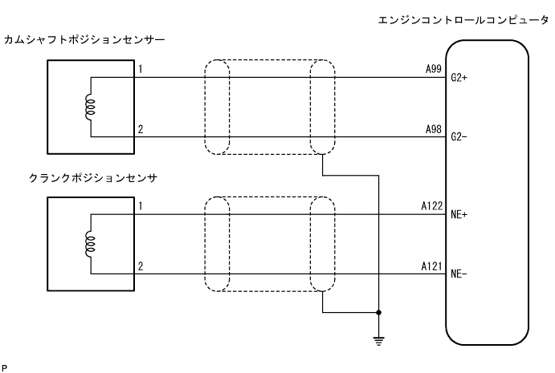
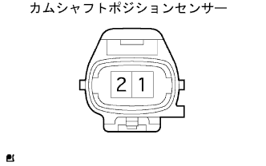
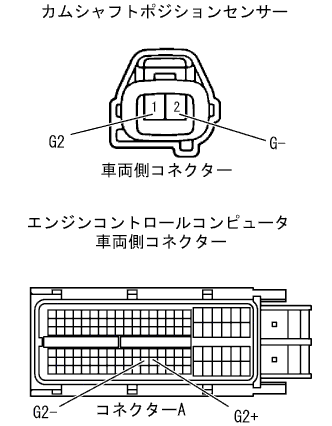

DTC P0340/12 Camshaft Position Sensor System |
| DTCNo. SAE/TCCS | DTC Detection Conditions 1. Diagnosis conditions 2. Malfunction status 3. Malfunction duration 4. Other | Inspection Area |
|---|---|---|
| P0340/12 |
|
|
| P0340/12 |
|
|

| Step 1 | Inspect Camshaft Position Sensor |
Resistance Inspection
 |
Using SST (Toyota electrical tester), measure the resistance between the connector terminals.
| Tester Connection | Condition | Standard |
|---|---|---|
| 1 - 2 | 20°C | 950 to 1250Ω |
|
| ||||
| OK | |
| Step 2 | Inspect Wire Harness or Connector (Engine Control Computer ←→ Camshaft Position Sensor) |
ReferenceDisconnect engine control computer connector A and the camshaft position sensor connector.
 |
Using SST (Toyota electrical tester), measure the resistance between the engine control computer and the camshaft position sensor vehicle side connector terminals. (For Terminals of ECU, see)
| Tester Connection (Terminal Name) | Condition | Standard |
|---|---|---|
| A99(G2+) - 1(G2) | Always | Below 1 Ω |
| A98(G2-) - 2(G-) | Always | Below 1 Ω |
| A99 (G2+) and 1 (G2) - Body ground | Always | 10k Ω or higher |
| A98 (G2-) and 2 (G-) - Body ground | Always | 10k Ω or higher |
|
| ||||
| OK | |
| Step 3 | Inspect Sensor Installation Area |
Inspect the tightening and installation condition of the camshaft position sensor bolt.
|
| ||||
| OK | |
| Step 4 | Inspect Camshaft |
Inspect the condition of the camshaft installation area and protrusions.
|
| ||||
| OK | ||
| ||